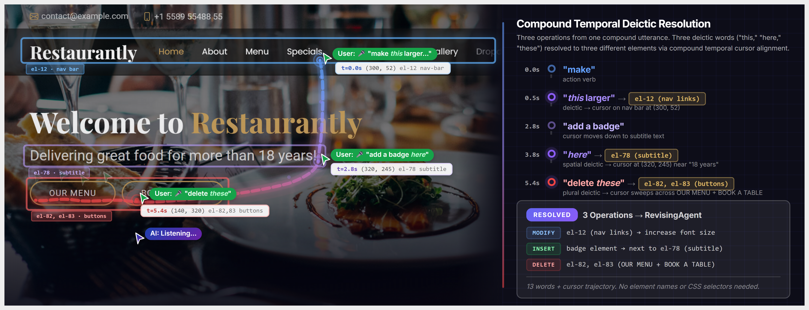
CursorTalk: Multimodal, Spatio-Temporal Inputs for AI-assisted Web UI Editing
IUI 2027 Conditionally accepted
A co-speech and gesture-based multimodal tool for AI-assisted web UI editing.
Senior Researcher · Fujitsu Research of America
I build HCI tools that make AI more accessible to people, with a focus on interactive systems for generative AI, video understanding, and visual analytics.
I received my PhD from Arizona State University, advised by Dr. Chris Bryan.
I'm always open to chatting about new ideas. Feel free to email me or send a DM on LinkedIn!
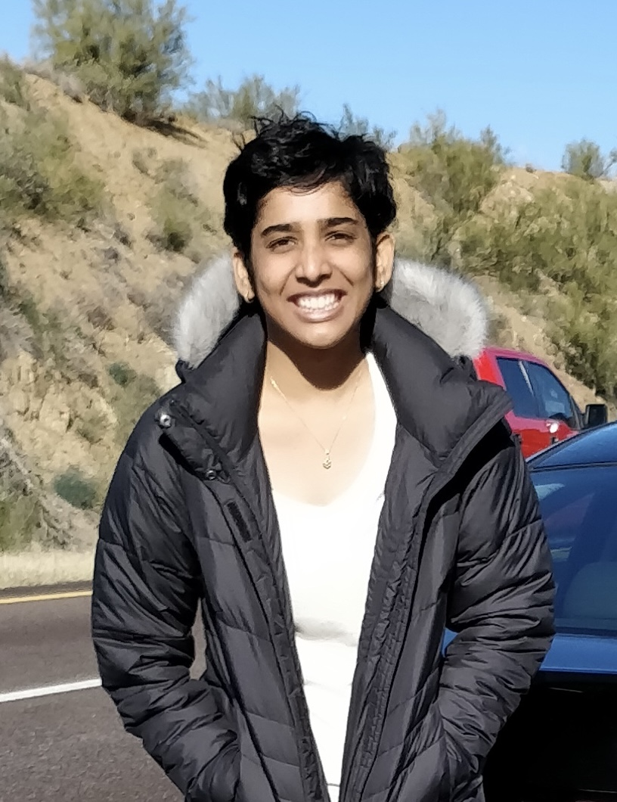

IUI 2027 Conditionally accepted
A co-speech and gesture-based multimodal tool for AI-assisted web UI editing.
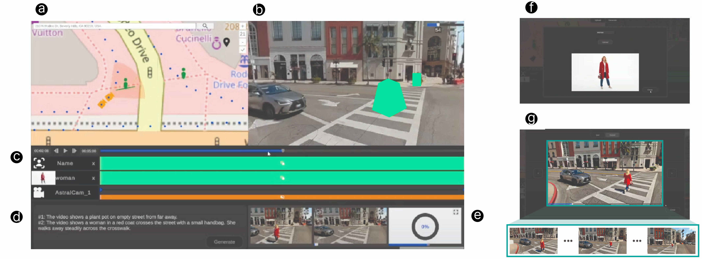
UIST 2026
Diffusion-based video generation driven by interactive map annotations and camera framing on street view imagery.
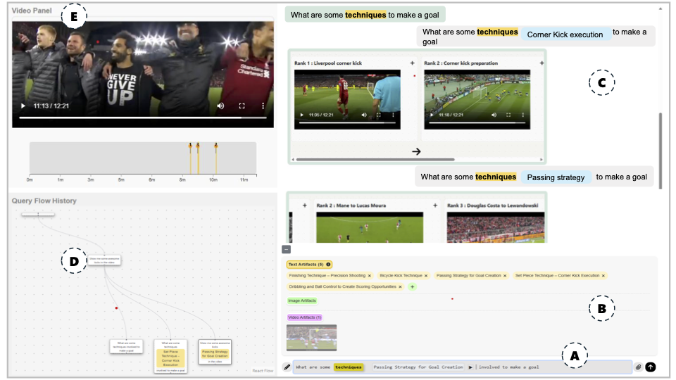
ACM IUI 2026
An interactive video moment retrieval tool for building and refining multimodal queries with AI.
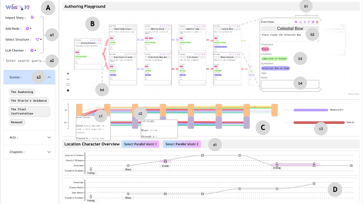
ACM Creativity & Cognition 2025 🏅 Honorable Mention
A visual analytics interface for interactive fiction authors to explore parallel emergent stories.
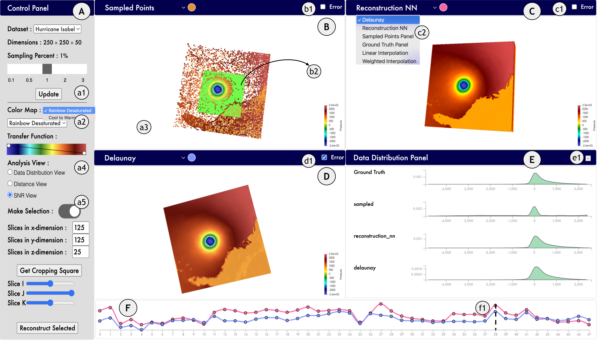
EuroVis Short Papers 2025
A visualization interface for comparing reconstructions of spatiotemporal datasets.
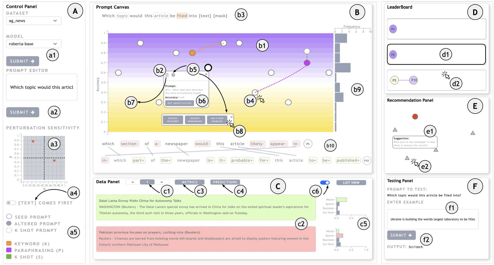
IEEE TVCG 2025
A visual analytics interface that helps people iterate on LLM prompts using linguistic and contextual recommendations.
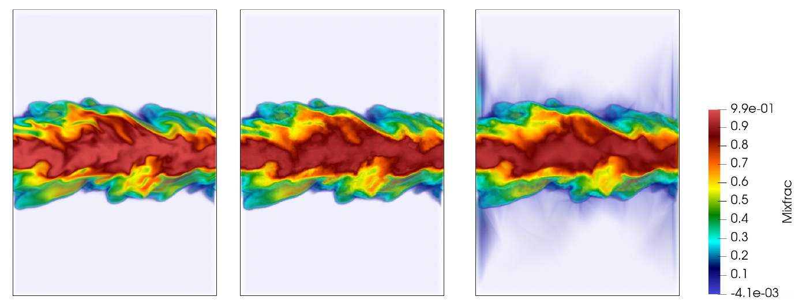
DRBSD @ SC 2024
A deep learning method for reconstructing large unstructured scientific datasets.
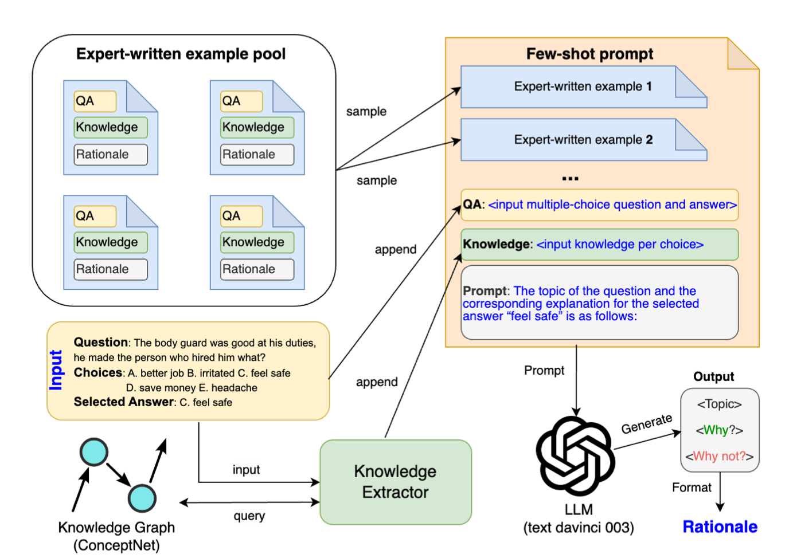
ACL Findings 2024
Evaluating how well LLMs generate rationales grounded in external knowledge for knowledge-intensive tasks.

GenAICHI Workshop 2024
A visual analytics system to explore, understand and summarize how vision-language models differ on real and fake images.
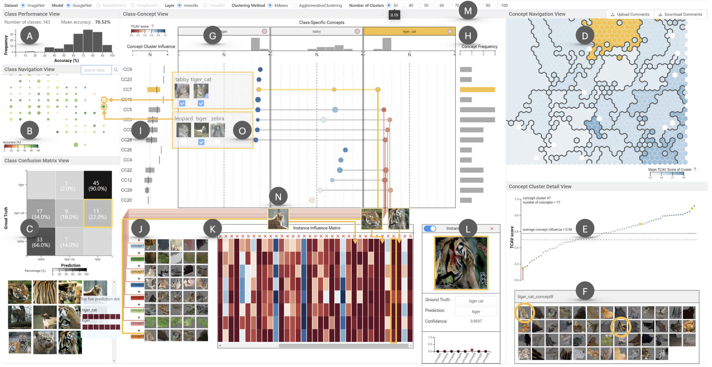
IEEE TVCG 2022
Explaining deep neural networks using image-based concepts extracted with ACE and TCAV.
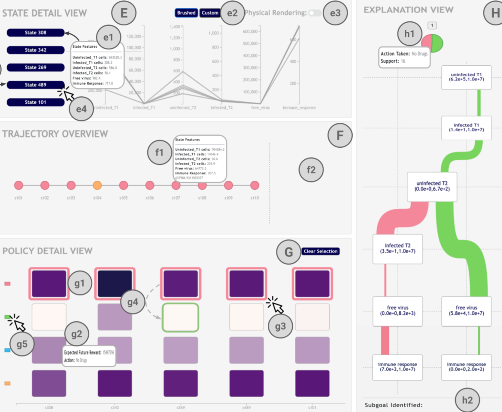
IEEE PacificVis 2022
A visual analytics interface for questioning, and so building trust in, an autonomous agent's decisions.
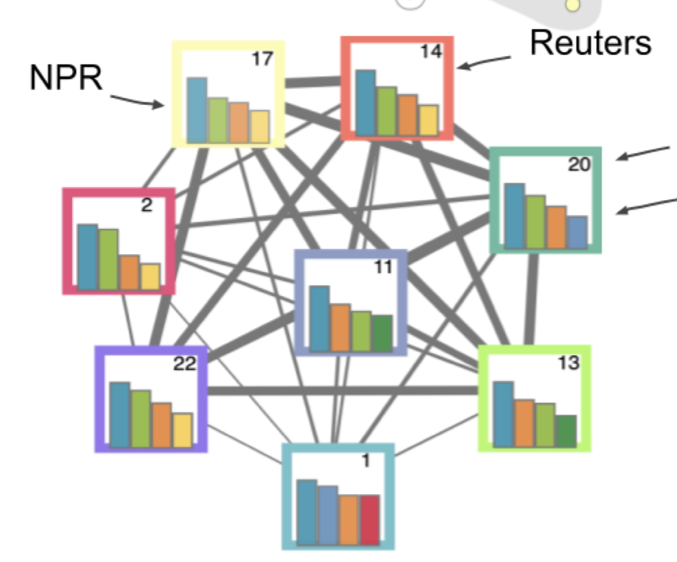
IEEE PacificVis 2022
A visual analytics system that helps journalism experts identify underlying polarities across news organizations.
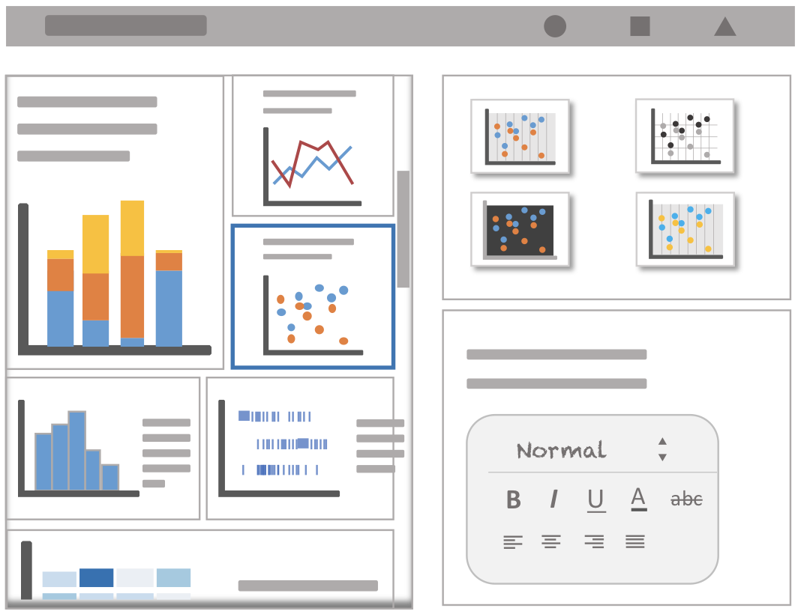
IEEE TVCG 2021
Crafting comic-style data stories from a collection of user-created charts.
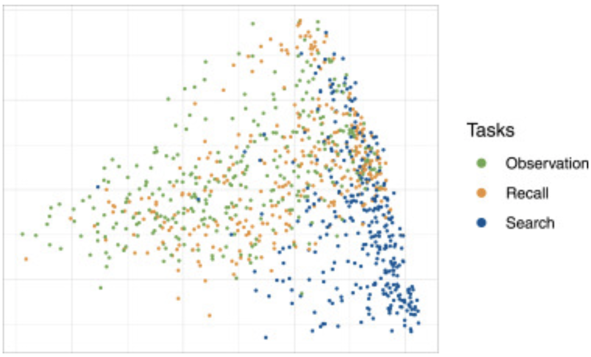
Visual Informatics 2020
A study of perception in text-embellished narrative visualizations across observation, search and recall tasks.
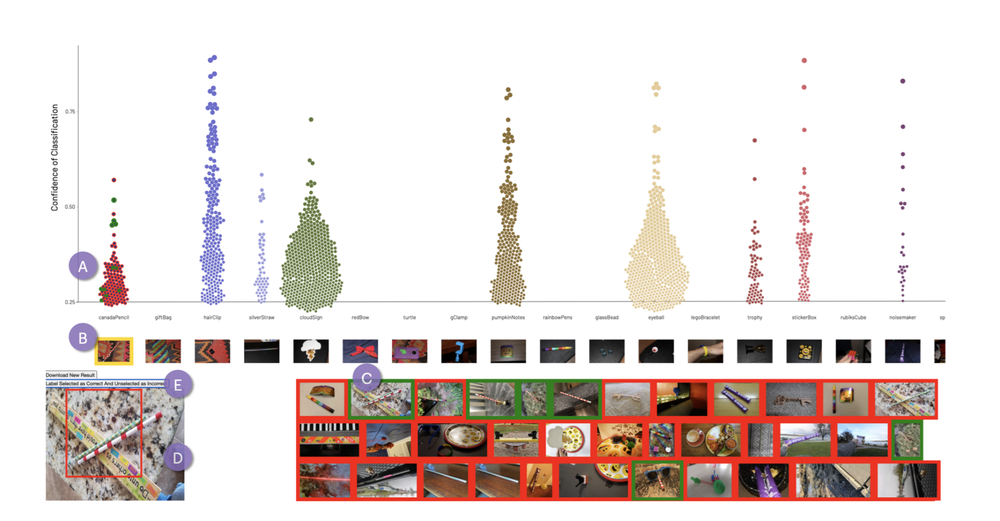
VAST Challenge @ IEEE VIS 2020 🏅 Honorable Mention
An interactive visualization system for analyzing the VAST 2020 Mini-Challenge 2 dataset.